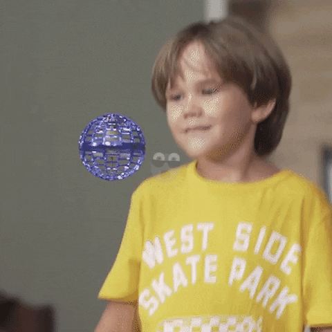

|
Home - Products - About Us |

|
Experience the FlyNova: The Gravity-Defying Fidget Spinner! |
| |
The FlyNova is here, the futuristic toy that will change the way you have fun! This incredible flying fidget spinner not only spins in your hands, but floats and dances in the air as if it had a life of its own. With a revolutionary design and controlled flight technology, FlyNova is easy to throw, catch and master with impressive tricks that will leave everyone speechless. Tired of the same old toys? FlyNova promises you endless hours of entertainment that fits anywhere, whether at home, in the park or with friends. It's safe, compact and so fascinating you won't be able to put it down. Be one of the first to experience this otherworldly experience and make the FlyNova yours today! |
It's Easy! Learn to Fly your FlyNova in Minutes |
The FlyNova is very easy to use and designed for immediate fun. Simply turn it on and hold it in the palm of your hand, then gently toss it upwards. Upon release, the FlyNova will activate its internal propellers, rising and spinning in the air. You can control it by adjusting the angle of your throw: if you throw it straight, it will come back to you like a boomerang; If you throw it up or to the side, it will follow that direction and then gently descend. Catch it in the air and get ready to launch again! |
 |